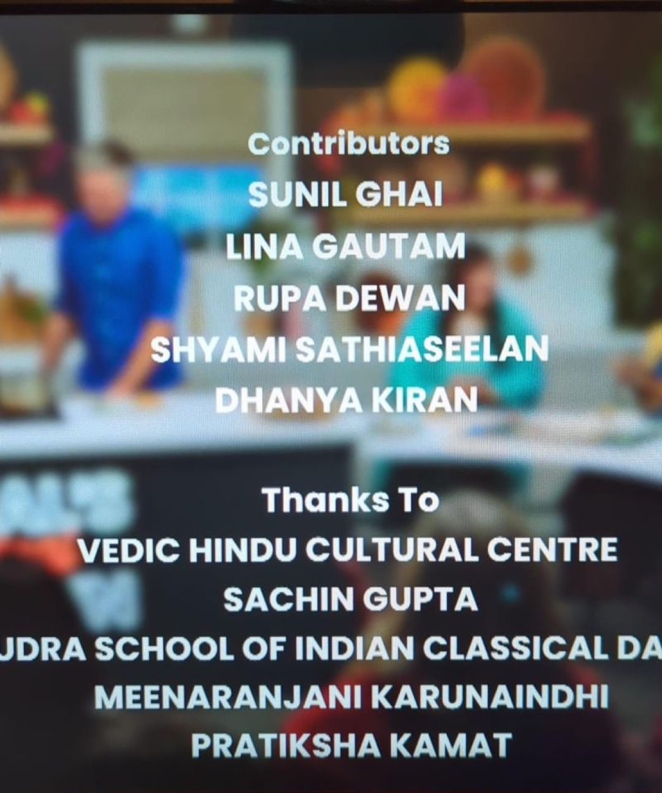
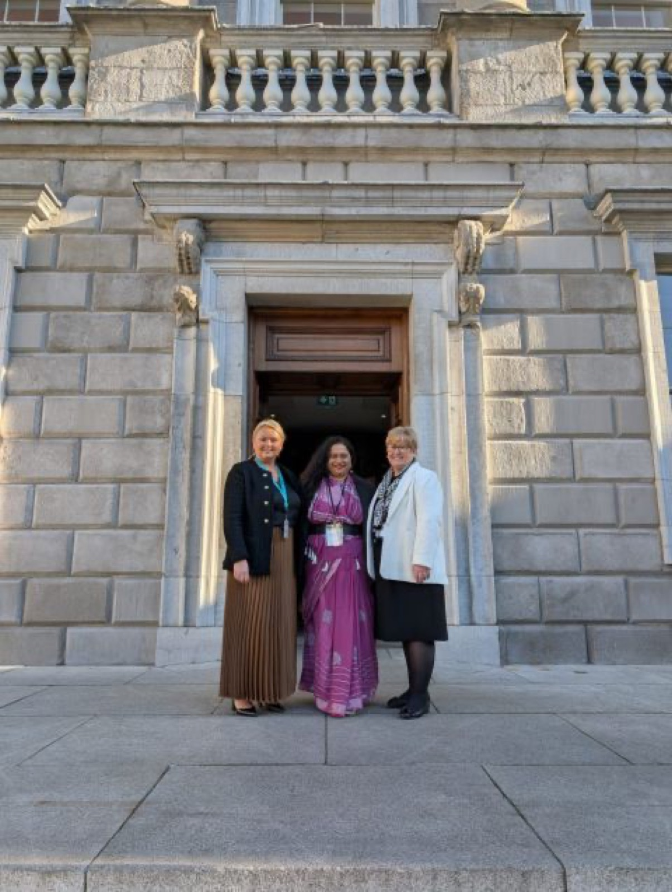
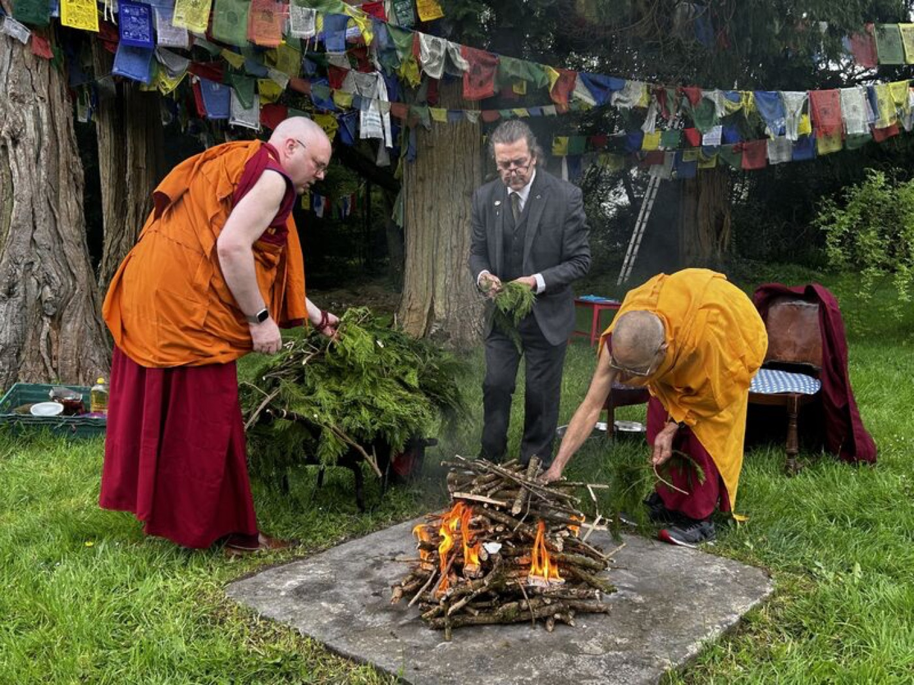
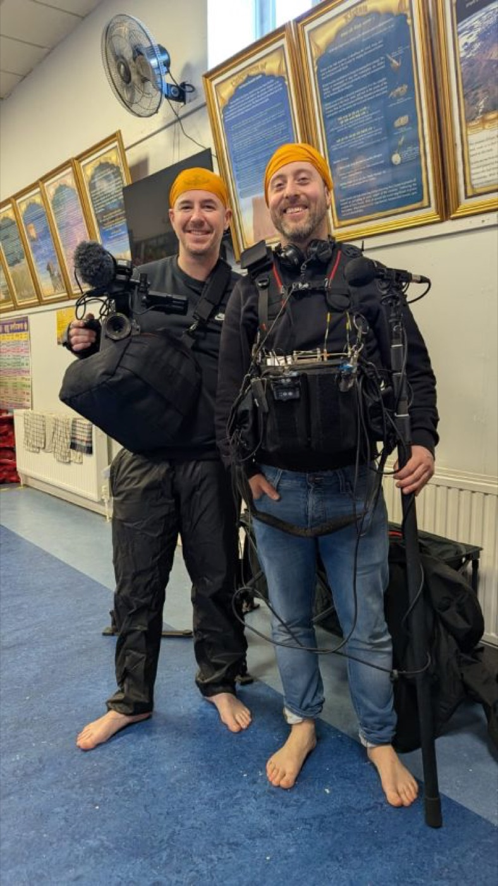
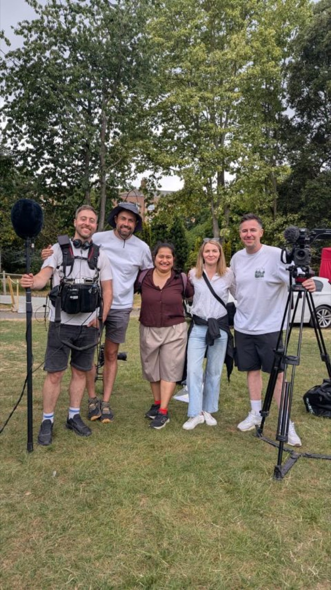
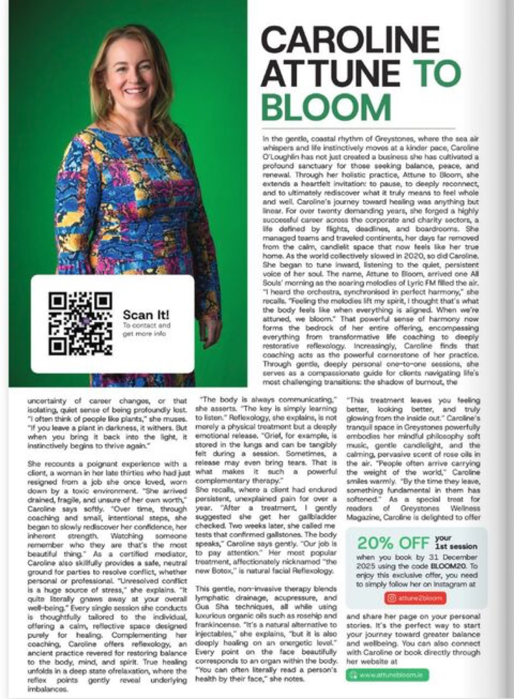
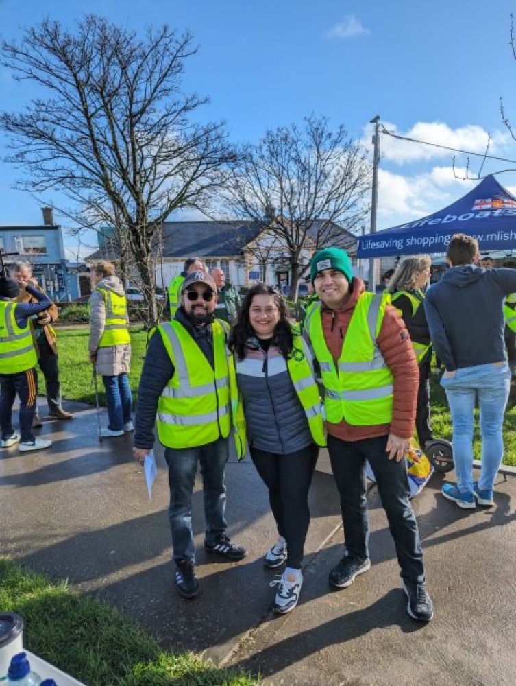
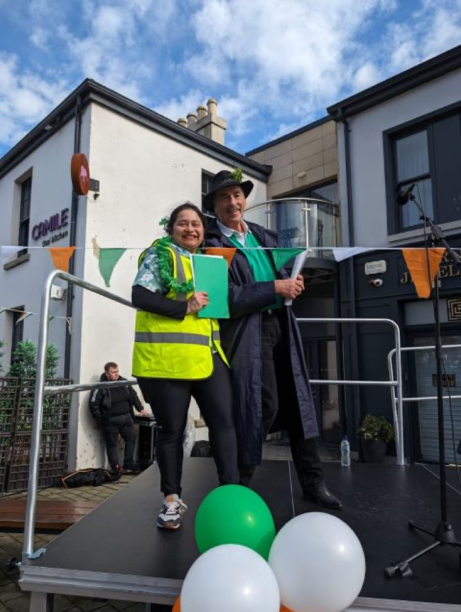
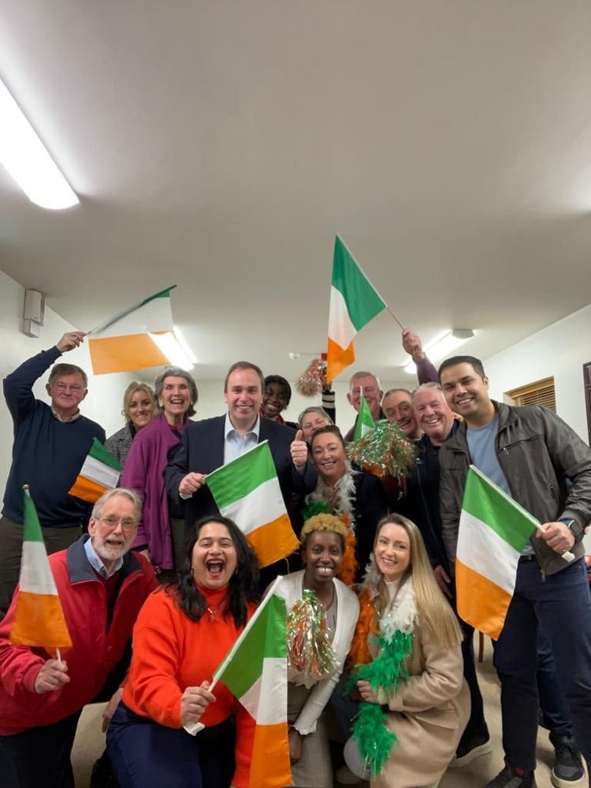
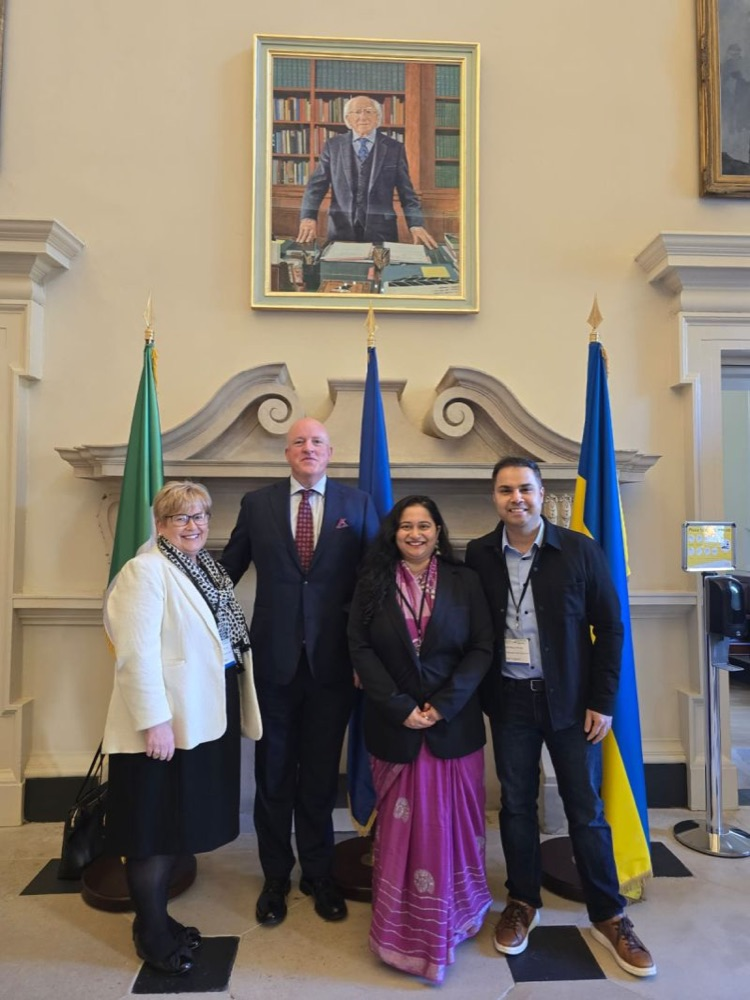

RTÉ · Appetite Media TV
Donal Skehan's Festival Kitchen: Diwali
On the research team for the Diwali episode. I recommended guests, shared memories of the festival, and sourced contacts for both the Diwali and Vaisakhi episodes.
Researcher · Writer · Storyteller · Ireland
Pratiksha Kamat (pruh-teek-sha)
I research, interview and write for television and print, from RTÉ festival documentaries to magazine features about the people who make Ireland home.

01 · Screen
Finding contributors, building trust and shaping the stories behind RTÉ's festival programming with Appetite Media TV.

RTÉ · Appetite Media TV
On the research team for the Diwali episode. I recommended guests, shared memories of the festival, and sourced contacts for both the Diwali and Vaisakhi episodes.

RTÉ Player · Festival Shorts
Personal stories from Mongolian, Sri Lankan and Tibetan communities in Ireland, and the many ways they mark Vesak.

RTÉ Player · Festival Shorts
Interviews on what Sikhism and Vaisakhi mean to families in Ireland, celebrated within the community and with neighbours of every faith.

RTÉ Player · Festival Shorts
Worked with Ireland's ISKCON community and filmed a live, unscripted parade in continuous motion.
“No matter where we come from, each of us carries a story.”Pratiksha Kamat · Greystones Wellbeing Magazine

02 · Words
As a guest journalist for the Greystones Wellbeing & Lifestyle Magazine, I write long-form profiles of women who rebuilt their lives through wellness, motherhood and community.
Series
Angharad Costin, Aoife Smith, Aoife Clifford and Caroline of Attune to Bloom talk about new motherhood, healing and finding their way back to themselves.
Profile
Healing through sound, spirit and love.
Feature
A profile of systematic kinesiologist Aoife Smith.

03 · On air & on camera
I'm co-host and communications strategist for Reddot Food, an Irish food company making preservative-free Indian staples, and a regular voice for Greystones on local radio.
04 · Community
Press briefings, sponsors, guests and emergency services: I help organise events that now run every year in Greystones.




Lead organiser
Greystones' first Diwali, with around 200 locals including councillors, Gardaí and firefighters. It's now an annual event.
Core organiser
Ran guests, food vendors, the website, social media and daily comms for one of Burnaby Park's biggest events.
Core organiser
Press briefings, coordination with emergency services, and communications on the day.
Organiser
Represented India for the first time: draped over 50 women in saris and painted over 200 hands with henna.
05 · About
I've spent over ten years in advertising, media and digital products, working on campaigns in India, the UAE, the UK, Scotland and Ireland. I hold a degree in advertising and media and a diploma in Product Management from University College Dublin.
Most recently I've worked in Irish television research, where I find the people behind a story and create a space where they feel comfortable sharing it, whether that ends up in words or on camera.